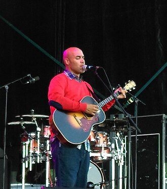

Peter Harper
Peter M. Harper is an American sculptor, musician, and academic. He is best known for his vocals and tenor guitar, especially in France, where he has had several concert tours.
Complete Discography & Tracklists (22)
2013 Peter Harper 🎵 11 Tracks
2016 Mr. President 🎵 0 Tracks
No tracks registered.
2017 Break the Cycle 🎵 10 Tracks
2019 Twilight Time 🎵 5 Tracks
2021 Survive 🎵 10 Tracks
2024 Jolene 🎵 0 Tracks
No tracks registered.
2024 Just Love Me 🎵 0 Tracks
No tracks registered.